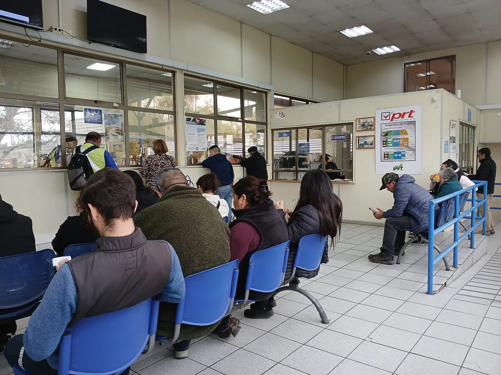
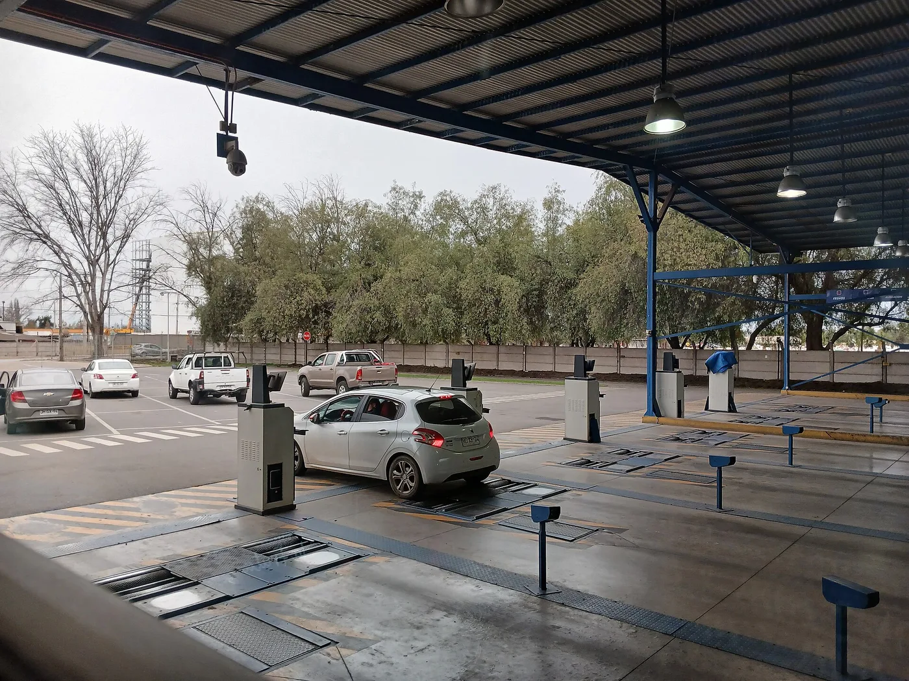

▲ 자동차 검사는 정기검사와 종합검사로 나뉘며, 등록 지역과 차령에 따라 어느 쪽을 받는지가 정해진다
자동차 검사 통지서를 받고 나면 대부분 "그냥 검사받으면 되는 것"으로 생각합니다.
그런데 검사에는 정기검사와 종합검사 두 가지가 있습니다. 항목도 다르고 비용도 다릅니다.
무엇이 갈리느냐 하면 — 차령과 등록 지역입니다. 같은 차라도 어디에 등록돼 있느냐에 따라 받는 검사가 달라집니다.
1. 왜 검사를 두 가지로 나눴나
자동차 검사는 원래 안전을 위한 제도였습니다. 제동, 조향, 등화, 배기 소음처럼 고장 나면 사고로 이어지는 항목을 확인합니다.
여기에 대기질이라는 목적이 더해지면서 검사가 갈렸습니다.
인구가 밀집한 지역일수록 자동차 배출가스가 대기질에 미치는 영향이 큽니다. 같은 배출량이어도 도심에서는 체감 농도가 다르기 때문입니다.
그래서 특정 지역에 등록된 차량은 배출가스를 더 정밀하게 검사하도록 했습니다. 그게 종합검사입니다.
2. 두 검사의 실제 차이
| 구분 | 정기검사 | 종합검사 |
|---|---|---|
| 검사 항목 | 안전도 + 기본 배출가스 | 정기검사 항목 + 정밀 배출가스 |
| 대상 | 모든 자동차 | 대기관리권역·인구 50만 이상 도시 등에 등록된 차량 중 일정 차령 초과 |
| 목적 | 안전 확보 | 안전 + 대기질 관리 |
종합검사는 정기검사를 대체합니다. 둘 다 받는 것이 아니라, 종합검사 대상이면 종합검사만 받습니다.
실무적으로 체감되는 차이는 세 가지입니다.
- 검사 시간이 더 걸린다 — 배출가스 정밀 검사가 추가되기 때문이다
- 비용이 더 든다 — 항목이 많은 만큼 수수료가 높다
- 부적합이 나올 여지가 넓다 — 특히 노후 디젤차에서 매연 항목이 걸리는 경우가 있다

▲ 검사소 대기 풍경. 종합검사는 배출가스 정밀 검사가 더해져 소요 시간이 길다(해외 검사소 사례) ⓒ Jorgebarrios, Wikimedia Commons (CC BY-SA 4.0)
3. 내 차는 언제 받아야 하나
가장 많이 쓰는 비사업용 승용차 기준입니다.
- 신차 등록 후 4년이 지나면 첫 검사를 받는다
- 이후에는 2년마다 받는다
차종과 용도에 따라 주기가 다릅니다. 사업용 차량이나 승합·화물차는 주기가 더 짧고, 차령이 올라가면 주기가 다시 짧아지는 구간도 있습니다.
검사 가능 기간은 유효기간 만료일 전후 각 31일, 총 62일입니다. 이 안에 받으면 과태료가 없습니다.
여기서 자주 하는 오해가 있습니다. "만료일보다 일찍 받으면 손해 아닌가"입니다.
그렇지 않습니다. 기간 내에 받으면 새 유효기간은 종전 만료일 다음 날부터 계산됩니다. 일찍 받는다고 기간이 깎이지 않습니다. 미루다 넘기는 것보다 미리 받는 편이 낫습니다.
4. 넘기면 얼마나 나오나
검사 기간을 넘기면 과태료가 시간에 비례해 늘어납니다. 4만 원에서 시작해 최대 60만 원까지 올라갑니다.
돈만 문제가 아닙니다. 검사를 오래 받지 않고 방치하면 운행정지명령, 번호판 영치, 직권말소 단계까지 이어질 수 있습니다.
통지서를 못 받았다는 항변은 통하지 않습니다. 주소 변경 신고를 하지 않아 우편물이 반송되는 사례가 많은데, 검사 의무는 통지 여부와 무관하게 발생합니다.
자세한 과태료 구간은 별도로 정리해둔 기사가 있습니다.

▲ 검사 이력은 조회로 확인할 수 있다. 중고차를 살 때 주행거리 조작을 걸러내는 근거로도 쓰인다
5. 검사 전에 미리 봐두면 좋은 것들
부적합 판정의 상당수는 미리 확인했으면 피할 수 있는 항목에서 나옵니다.
- 등화류 — 전조등, 방향지시등, 제동등, 번호판등. 한 개만 나가도 부적합이다. 제동등은 혼자 확인하기 어려우니 벽에 비춰보거나 도움을 받는다.
- 타이어 마모 — 트레드 1.6mm 미만이면 부적합이다.
- 와이퍼와 워셔액 — 작동 여부를 본다.
- 배출가스 — 검사 직전 충분히 주행해 엔진을 데운 상태로 가면 수치가 안정된다. 냉간 상태에서는 불리하다.
- 불법 튜닝 원복 — 승인받지 않은 구조 변경, 과도한 등화 색상 변경 등은 부적합 사유다.
- 경고등 — 계기판에 경고등이 켜진 상태면 항목에 따라 걸릴 수 있다.
예약은 미리 하는 편이 낫습니다. 한국교통안전공단 검사소와 민간 지정정비사업자(카센터) 모두 가능하고, 접근성과 대기 시간을 비교해 고르면 됩니다.

▲ 검사는 공단 직영 검사소와 지정정비사업자 모두에서 받을 수 있다(해외 검사소 사례) ⓒ Jorgebarrios, Wikimedia Commons (CC BY-SA 4.0)
6. 정리
자동차 검사는 정기검사와 종합검사로 나뉩니다. 종합검사는 정기검사 항목에 정밀 배출가스 검사가 더해진 것으로, 대기관리권역이나 인구 50만 이상 도시 등에 등록된 차량이 일정 차령을 넘기면 대상이 됩니다.
비사업용 승용차는 신차 등록 4년 뒤 첫 검사, 이후 2년 주기입니다. 검사는 만료일 전후 각 31일(총 62일) 안에 받으면 되고, 일찍 받아도 유효기간이 깎이지 않습니다.
기간을 넘기면 4만 원부터 최대 60만 원까지 과태료가 붙고, 장기 방치 시 번호판 영치나 직권말소까지 이어질 수 있습니다.